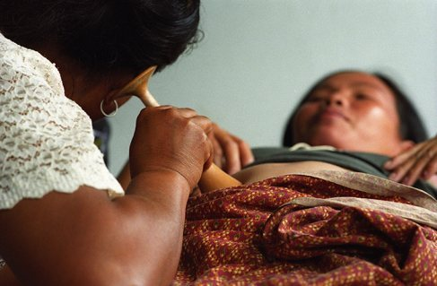

Kabar Berita Terbaru Dunia Kesehatan, Seks, Diet, Herbal Terbaik
2021.06.04 18:55

Sukses
liputan6
Home News Ramadan Bisnis Quran Saham ShowBiz Bola Foto Tekno Cek Fakta Video Hot Regional Otomotif Disabilitas Global On Off Surabaya Lifestyle Health Citizen6 Pilkada Belanja Health Health Info Fit & Diet Herbal Drugs & Diseases Persona Diary Paskibraka Mind & Soul Mom & Kids Seks Konsultasi Psikologi HEADLINE HARI INI Wacana Penerapan Tilang untuk Pesepeda di Jalan Raya, Urgensinya? 04 Jun 2021 17:26
Update COVID-19: 10 Provinsi dengan Angka Sembuh Lebih Tinggi dari Kasus Baru per 4 Juni 2021
Laporan harian sebaran COVID-19 per 4 Juni 2021 menunjukkan ada 10 provinsi dengan angka sembuh lebih tinggi dari kasus baru COVID-19.
Berita Utama Lainnya 04 Jun 2021 17:00 Tanggapan Pakar Terkait Pembatalan Ibadah Haji 2021 04 Jun 2021 15:00 Cek Penerapan 3M, Ganip Warsito Blusukan ke Pasar Bitingan Kudus 04 Jun 2021 14:00 Satgas COVID-19 Minta Dinas Kabupaten dan Kota Aktifkan Seluruh Contact Tracer yang Telah Dilatih 04 Jun 2021 13:10 Wajah Kekeyi Bikin Pangling, Ketahui Plus Minus Filler Hidung 04 Jun 2021 11:28 Masukan untuk Kekeyi yang Baru Filler Hidung, Warganet: Pakai Behel Pasti Cantik 03 Jun 2021 18:00 Dokter Paru: Mayoritas Penderita Long COVID-19 adalah Pria 02 Jun 2021 19:54 Studi RSCM: 40 Persen Anak Terkonfirmasi Positif COVID-19 Meninggal Dunia 03 Jun 2021 19:21 Gejala Long Covid dan Manfaat Vaksin Bila Terpapar COVID-19 04 Jun 2021 10:07 Filler Hidung yang Dilakukan Kekeyi Termasuk Operasi Plastik?
WABAH VIRUS CORONA
Imbas Mudik Lebaran 2021, Zona Merah Covid-19 Naik Jadi 13 Wilayah
Cek Fakta: Tidak Benar Anak-anak Kebal Virus Corona Covid-19
FOTO: Kala Badut Bantu Anak-Anak Mumbai Melawan COVID-19
Pemerintah Indonesia Nilai Pandemi COVID-19 Ancam Keselamatan Jemaah Haji
FOTO: Kolombia Dihantam Gelombang Ketiga COVID-19, Angka Kematian Melonjak
Wabah COVID-19 Merebak di Wilayah Perbatasan Myanmar-India
Health Info
Bahaya Penggunaan Plastik, Fokus Komnas Perlidungan Anak Tiga Tahun Terakhir
Penggunaan botol plastik bisa berdampak untuk kesehatan seluruh anggota keluarga Health Info 04 Jun 2021 21:27
Adegan Kekerasan pada Anak di TV Bertentangan dengan UU
Dari hasil telaah yang dilakukan KemenPPPA ditemukan beberapa aspek yang telah dilanggar dalam produksi sinetron tentang pernikahan dini di salah satu stasiun teve. Mom & Kids 04 Jun 2021 21:00
KemenPPPA: Jangan Sampai Sinetron Menimbulkan Perilaku Perkawinan Anak
Tayangan yang ada di media penyiaran seperti televisi dengan acara sinetronnya tidak memicu makin banyaknya perkawinan anak. Health Info 04 Jun 2021 20:00
Hipertensi di Kalangan Milenial Meningkat, Ubah Gaya Hidup dan Deteksi Dini di Rumah
hipertensi pada milenial bisa dipengaruhi beberapa faktor seperti gaya hidup tidak aktif, stres, kemajuan teknologi yang membuat seseorang tidak bergerak dan kecemasan akan COVID-19 yang mengganggu kesehatan mental Health 04 Jun 2021 20:00
VIDEO: Ini Penyebab Orang Patah Hati Berbuat Sesuatu diluar Nalar
17:43 Health Info 04 Jun 2021 18:00
Filler Hidung Seperti Kekeyi Bisa Picu Dampak Negatif, Ini Saran Dokter Estetika
Untuk mempercantik penampilan tak jarang orang-orang melakukan berbagai hal, salah satunya menjalani filler hidung seperti yang dilakukan selebgram Kekeyi Putri Cantika. Health 04 Jun 2021 16:30
FOTO: Karyawan KLY Jalani Vaksinasi Gotong Royong
+9 Health Info 04 Jun 2021 16:00
Ganip Warsito Temukan Karantina Pasien COVID-19 di RSUD Lukmonohadi Kudus Belum Sesuai Sta
Ganip Warsito menemukan penanganan karantina pasien COVID-19 di RSUD Lukmonohadi Kudus belum sesuai standar. Health 04 Jun 2021 13:00
VIDEO: Terapi Aroma untuk Pulihkan Penciuman Pasca Covid-19
03:53 Health Info 04 Jun 2021 12:09
Tidak Selalu Buruk, 10 Lemak Kaya Omega-6 Ini Baik untuk Kesehatan Anda
Berikut ini 10 besar sumber makanan tinggi asam lemak omega-6 yang masih aman untuk Anda konsumsi berdasarkan peringkat Average Intake (AI). Health 04 Jun 2021 11:13
VIDEO: Live Streaming Netizen +62 Urusan Asmara Bikin Orang Bertindak diluar Akal
55:24 Health Info 04 Jun 2021 09:00
Mukormikosis, Penyakit Langka yang Mematikan
Seiring timbulnya tsunami COVID-19 di India, timbul pula sekitar 9.000 kasus mukormikosis yang acap kali disebut infeksi jamur hitam. Health Info 04 Jun 2021 08:28
3 Pertanyaan Tentang Vaksin Sinovac, Ini Jawaban WHO
Vaksin Sinovac baru saja mengantongin izin penggunaan darurat dari WHO Health Info 04 Jun 2021 07:31
Hampir Setengah Kapasitas Bed Khusus COVID-19 di RS Hasan Sadikin Terisi
Per 2 Juni 2021 sebanyak 109 tempat tidur perawatan pasien COVID-19 di RS Hasan Sadikni Bandung terpakai. Health Info 04 Jun 2021 07:25
Apakah Vaksin Sinovac Aman, Ini 5 Fakta yang Perlu Anda Ketahui
Fakta-fakta mengenai Vaksin Sinovac dari China yang wajib Anda ketahui Health Info 04 Jun 2021 06:20
Di beberapa negara yang sudah melakukan vaksinasi COVID-19 memperlihatkan mampu mengendalikan pandemi. Hal ini ini terjadi sejalan dengan program vaksinasi yang diadakan negara tersebut. Health Info 04 Jun 2021 06:15
Mesir Mulai Produksi Lokal Vaksin Sinovac Akhir Juni Ini
Produksi lokal vaksin Sinovac menyusul kesepakatan antara Mesir dan Sinovac Biotech Ltd Health Info 04 Jun 2021 06:00
Pakar: Mukormikosis Tidak Menular dari Orang dan Binatang
Mukormikosis yang semula dianggap sebagai jamur hitam tidak menular dari orang dan binatang. Health Info 03 Jun 2021 22:00
Swab Elecsys, Alat Tes COVID-19 Anyar untuk Tracing Virus Corona
Metode awal sama seperti swab antigen, pasien akan diswab melalui hidung untuk mengambil cairan yang berada di belakang hidung. Mind & Soul 03 Jun 2021 21:00
2 Tips Cegah Depresi Selama Pandemi COVID-19
Riset dari Fakultas Kedokteran Universitas Padjajaran mengungkapkan 47 persen responden mahasiswa mengaku mengalami gejala depresi selama pandemi COVID-19. Health Info 03 Jun 2021 20:00
WHO Ingin Semua Negara Vaksinasi 10 Persen Populasi Warganya pada September 2021
WHO mengatakan demi mencapai tujuan tersebut, ada 250 juta orang di negara berpenghasilan rendah dan menengah yang harus divaksinasi COVID-19 Health Info 03 Jun 2021 19:00
Pakar: Tidak Semua Mutasi Menguntungkan Virus Corona
Hanya 4-5 persen dari mutasi virus yang menyebabkan virus, seperti Virus Corona, tambah fit Health Info 03 Jun 2021 18:14
Update COVID-19: 16 Provinsi Laporkan Angka Sembuh Lebih Tinggi per 3 Juni 2021
Data harian sebaran COVID-19 per 3 Juni 2021 menunjukkan ada 16 provinsi dengan angka sembuh lebih tinggi dari kasus baru COVID-19. Health Info 03 Jun 2021 16:05
Mengapa EUL untuk Vaksin Sinovac Lama Dikeluarkan WHO?
Vaksin Sinovac akhirnya kantongin emergency use listing (EUL) dari WHO dua hari lalu Health 03 Jun 2021 15:30
VIDEO: Wabah Rabies Menyerang Kecamatan Jembrana
01:30 Health Info 03 Jun 2021 15:20
Menteri Bintang: Jangan Cuma Hiburan, Konten Acara Penyiaran Seharusnya Melindungi Anak
Baru-baru ini sebuah sinetron dengan cerita poligami dan pernikahan usia anak menuai banyak kecaman. KemenPPPA menanggapi hal ini. Begini respons Menteri Bintang. Health 03 Jun 2021 15:00
VIDEO: Hampir 200 Tenaga Kesehatan di Kabupaten Kudus Terpapar Covid-19
01:28 Health Info 03 Jun 2021 14:00
CardiWatch, Aplikasi Pemeriksa Kesehatan Jantung Berbiaya Rendah Karya Mahasiswa UI
Para peneliti melihat bahwa penyakit jantung merupakan penyebab kematian nomor satu di Indonesia, bahkan dunia. CardiWatch jadi salah satu aplikasi pendeteksi kesehatan jantung. Health Info 03 Jun 2021 13:00
Kemenkes: Lansia Tetap Aset Besar Bagi Negara
Kehadiran lansia yang sehat secara fisik dan psikologis di tengah-tengah keluarga secara tidak langsung membuat negara terjamin secara produktivitasnya. Health Info 03 Jun 2021 12:41
Puluhan ASN Terpapar COVID-19, Kantor Gubernur Jabar Ditutup Sementara
Terdapat satu klaster COVID-19 yang membuat situasi di Gedung Sate (Kantor Gubernur Jawa Barat) ini harus dilakukan penutupan sementara. Health Info 03 Jun 2021 12:39
Vaksin Sinovac Kantongi Izin WHO, Wamenkes Dante Berharap Masyarakat Lebih Pede Divaksin
Kepercayaan terhadap vaksin Sinovac diharapkan meningkat usai vaksin Corona dari China mengantongi izin WHO Health Info 03 Jun 2021 12:00
Pakar Sebut Istilah Jamur Hitam Tak Tepat Digunakan untuk Kasus Mukormikosis
Jamur hitam atau black fungus yang dikatikan dengan penyakit mukormikosis ramai diperbincangkan Konsultasi Psikologi 03 Jun 2021 11:00
5 Aktivitas Pereda Stres Selama Pandemi COVID-19
Masa pandemi COVID-19 menimbulkan berbagai masalah termasuk masalah kesehatan mental. Berbagai kebiasaan yang tiba-tiba berubah membuat sebagian orang rentan terkena stres dan depresi. Health Info 03 Jun 2021 10:00
Gandeng BKKBN, Mensos Risma: Program Penurunan Stunting Diawali di NTT
Mensos Risma mengatakan bahwa program penurunan stunting akan diawali dari NTT Health Info 03 Jun 2021 09:25
Vaksin Sinovac Akan Digunakan untuk Vaksinasi Mandiri di Singapura
Singapura merestui vaksin Sinovac untuk digunakan di dalam program vaksinasi mandiri COVID-19 Persona 03 Jun 2021 09:00
Hasil Tes MBTI Kim Bum dan Rye Hye Young Sama-sama INTJ, Ketahui Artinya
MBTI yang diikuti Kim Bum dan Rye Hye Young adalah tes yang membagi 16 tipe kepribadian Health Info 03 Jun 2021 08:00
Kenaikan Kasus COVID-19 2 Pekan Pasca Lebaran 2021 Tidak Setinggi Tahun Lalu
Kenaikan kasus COVID-19 dalam 2 pekan pasca Lebaran 2021 tidak setinggi tahun lalu. Health Info 03 Jun 2021 07:00
Pulau Jawa Sumbang Lebih dari Setengah Kasus COVID-19 Nasional Sepekan Terakhir
Pulau Jawa menyumbang lebih dari setengah kasus COVID-19 nasional dalam sepekan terakhir. Health Info 03 Jun 2021 06:32
Berkat Vaksin Sinovac Kehidupan di Kota Brasil Kembali Normal
Project S memerlihatkan kemanjuran vaksin Sinovac di Kota Serrana, Brasil Health Info 03 Jun 2021 06:00
Ini Yang Terjadi pada Tubuh Saat Makan Sosis
Sosis memang sumber protein tapi harus disadari bahwa makanan ini tinggi lemak Health Info 02 Jun 2021 21:00
Pakai Pembalut Kain, Ini Hal Penting yang Perlu Diperhatikan
Menggunakan pembalut kain boleh-boleh saja tapi ada beberapa hal yang harus diperhatikan. Health Info 02 Jun 2021 20:00
[Kolom Pakar] Prof Tjandra Yoga Aditama: Antisipasi Kenaikan COVID-19 dengan Early Detecti
Sehubungan berita bahwa puncak kenaikan kasus COVID-19 diperkirakan akan akhir Juni, maka baik kalau dilakukan kegiatan Early Diagnosis and Prompt Treatment. Health Info 02 Jun 2021 19:00
KemenPPPA Apresiasi Polres Tangsel atas Respons Cepat Kasus Kekerasan pada Anak
Respons cepat Polres Kota Tangerang Selatan dan Dinas Pemberdayaan Perempuan dan Perlindungan Anak (PPPA) ini mendapatkan apresiasi dari Menteri PPPA, Bintang Puspayoga. Health Info 02 Jun 2021 18:22
ODGJ dan Penyandang Disabilitas Mulai Terima Vaksinasi COVID-19
ODGJ dan penyandang disabilitas mulai terima vaksinasi COVID-19 hari ini, Rabu, 2 Juni 2021. Health Info 02 Jun 2021 18:00
Menkes Budi Gunadi Sambut Baik Izin Darurat Vaksin Sinovac dari WHO
Menkes Budi Gunadi menyambut baik izin darurat vaksin Sinovac dari WHO. Meski begitu kepada masyarakat, Budi mengatakan agar tak pilih-pilih merek vaksin. Health 02 Jun 2021 18:00
FOTO: Keseharian Pasien Tenda Glamping Rumah Lawan Covid-19 di Tangsel
+5 Health Info 02 Jun 2021 17:56
Update COVID-19: 15 Provinsi Laporkan Angka Sembuh Lebih Tinggi per 2 Juni 2021
Data harian sebaran COVID-19 per 2 Juni 2021 pukul 12.00 WIB menunjukkan ada 15 provinsi dengan angka sembuh lebih tinggi dari kasus baru COVID-19. Health Info 02 Jun 2021 16:15
Muncul Kasus Flu Burung Baru di China H10N3, Seberapa Bahaya?
Komisi Kesehatan Nasional China (NHC) mengumumkan bahwa seorang pria berusia 41 tahun di kota Zhenjiang, di provinsi Jiangsu, China terinfeksi jenis flu burung baru H10N3. Health Info 02 Jun 2021 16:00
Infeksi Jamur Hitam Mematikan Serang Pasien COVID-19 di India
Infeksi jamur hitam mematikan tengah menyerang pasien COVID-19 di India. Health Info 02 Jun 2021 15:00
Menkes Budi Gunadi Sebut Infeksi Jamur Hitam Belum Terdeteksi di Indonesia
Menkes Budi Gunadi menyebut infeksi jamur hitam (black fungus) belum terdeteksi di Indonesia. Health Info 02 Jun 2021 14:00
Geger Coronavirus Anjing di Malaysia, Pakar: Tidak Ada Bukti, Perlu Penelitian Lanjutan
Baru-baru ini penemuan kasus virus Corona dari anjing jadi perbincangan di Malaysia dan beberapa negara, ini kata ahli. Health Info 02 Jun 2021 13:00
Kasus Kematian Lansia Akibat COVID-19 Capai 49,4 Persen, Ini 5 Saran dari Pakar
Peningkatan kasus kematian lansia akibat COVID-19 per awal Juni sebanyak 49,4 persen Health Info 02 Jun 2021 12:00
Vaksin Sinovac Lolos Izin WHO, Bio Farma Siap bila Diminta Negosiasi Vaksin Johnson &
WHO baru saja memberi izin penggunaan darurat vaksin Sinovac dari China Health Info 02 Jun 2021 11:11
Vaksin Sinovac Ampuh Tekan Kematian karena COVID-19 Hingga 95 Persen, Studi di Kota Brasil
Brasil mengumumkan kabar bahagia terkait penggunaan vaksin Sinovac di negara tersebut. Health Info 02 Jun 2021 11:00
Waspada, 12 Hari Terakhir Kasus Aktif COVID-19 Melonjak 13.810
Dalam 12 hari terakhir usai libur Lebaran ini, kasus aktif COVID-19 melonjak 13.810. Health Info 02 Jun 2021 10:00
Posko COVID-19 Penting dalam Masa Perpanjangan PPKM Mikro, Ketahui Fungsinya
PPKM mikro diperpanjang hingga 14 Juni 2021, Ganip Warsito minta optimalkan peran posko. Health Info 02 Jun 2021 09:17
3 Penyakit Langka di Drama Korea, Kenali Gejala dan Jenisnya
Drama Korea ini berkisah tentang sang karakter utama yang mengidap penyakit langka Health 02 Jun 2021 08:16
VIDEO: Vaksin Covid-19 Sinovac Dapat Izin Penggunaan Darurat WHO
00:39 Drugs & Diseases 02 Jun 2021 08:00
WHO Tak Ingin Penelitian Asal Usul COVID-19 Diracuni Urusan Politik
WHO minta agar studi mengenai asal usul virus corona COVID-19 tidak dicampuradukkan dengan urusan politik dan dilakukan dengan tidak saling menyalahkan. Health Info 02 Jun 2021 06:39
Vaksin Sinovac dan 5 Vaksin Corona Ini Masuk Daftar Penggunaan Darurat WHO
Vaksin Sinovac resmi masuk dalam daftar penggunaan darurat (Emergency Use Listing) WHO Fit & Diet 02 Jun 2021 06:00
4 Tanda Sepatu Olahraga Anda Harus Segera Ganti
Ganti sepatu olahraga Anda saat kondisi begini, termasuk kedaluwarsa Indeks Berita
TOPIK POPULER
# Happy Hypoxia # Tips Kesehatan # Tips Diet # Posisi Seks # Alergi
TAROT HARI INI
Tarot Minggu Ini: Kesulitan Datang Bertubi-tubi, Jangan Menyerah.
TIPS SEKS
5 Menit Olahraga Kama Sutra Sexy Supergirl untuk Kuatkan Otot Core
Populer
Lihat Semua 1 Health Info
Apakah Vaksin Sinovac Aman, Ini 5 Fakta yang Perlu Anda Ketahui
2 Health Info
Mukormikosis, Penyakit Langka yang Mematikan
3 Health Info
Masukan untuk Kekeyi yang Baru Filler Hidung, Warganet: Pakai Behel Pasti Cantik
4 Health Info
Filler Hidung yang Dilakukan Kekeyi Termasuk Operasi Plastik?
5 Health Info
3 Pertanyaan Tentang Vaksin Sinovac, Ini Jawaban WHO
6 Health Info
Wajah Kekeyi Bikin Pangling, Ketahui Plus Minus Filler Hidung
7 Health Info
Satgas COVID-19 Minta Dinas Kabupaten dan Kota Aktifkan Seluruh Contact Tracer yang Telah Dilatih
8 Health Info
Pakar: Mukormikosis Tidak Menular dari Orang dan Binatang
Update COVID-19: 10 Provinsi dengan Angka Sembuh Lebih Tinggi dari Kasus Baru per 4 Juni 2021
Informasi Seputar Kesehatan | Halodoc Berita. 4 Dampak Radiasi Ponsel bagi , Gangguan Serius Reproduksi dan Kesuburan. 1 hari lalu · Berita. Kolaborasi OKI, LIPI Perkuat Riset Produk .
Kementerian Kesehatan Republik Indonesia Berbagai berita umum, anak, reproduksi dan seks, kecantikan dan kebugaran, penyakit menular, dan produk serta layanan di Indonesia.